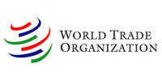
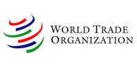

Kerjasama Multilateral
Kerjasama Multilateral merupakan bentuk kerjasama internasional yang melibatkan tiga negara atau lebih untuk
mencapai tujuan bersama dalam berbagai bidang seperti ekonomi, politik, keamanan, sosial, dan lingkungan.
Contoh kerjasama multilateral antara lain :
- PBB yang melibatkan 193 negara di dunia
- Perjanjian Paris
- Bantuan kemanusiaan untuk negara - negara yang terkena musibah bencana alam
- Kerja Sama ASEAN dalam menangani kasus COVID-19
Peran Indonesia dalam Kerja Sama Multilateral
- ASEAN : Indonesia adalah salah satu pendiri ASEAN dan memiliki peran besar dalam menciptakan
stabilitas dan kemakmuran di Asia Tenggara. Indonesia berkontribusi dalam berbagai program ASEAN
untuk mendorong pertumbuhan ekonomi, keamanan, dan perdamaian di kawasan ini.
- WHO : Indonesia bekerja sama dengan WHO untuk menangani masalah kesehatan, seperti penanggulangan
COVID-19 dan pemberantasan penyakit menular. Kerja sama ini penting untuk memperbaiki sistem
kesehatan dan mempercepat akses terhadap vaksin.
- PBB : Indonesia aktif mendukung program-program PBB, seperti operasi perdamaian (Indonesia mengirim
pasukan perdamaian ke berbagai negara konflik), isu lingkungan, dan bantuan kemanusiaan. Pada tahun
2019, Indonesia terpilih sebagai anggota tidak tetap Dewan Keamanan PBB dan terlibat dalam perumusan
kebijakan keamanan dunia.
- G20 : Sebagai anggota G20, Indonesia terlibat dalam pertemuan negara-negara ekonomi terbesar dunia
untuk membahas stabilitas ekonomi global, kebijakan moneter, dan masalah keuangan. Indonesia juga
mempromosikan kerja sama yang mendukung negara berkembang dalam mencapai pertumbuhan ekonomi yang
berkelanjutan.


 
